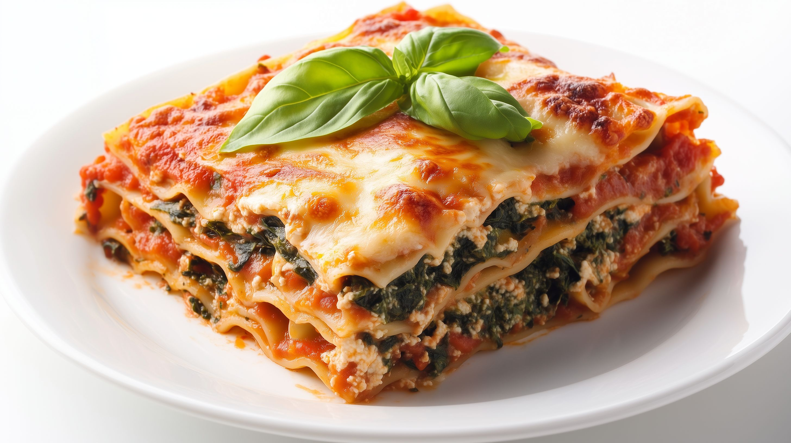

Lasagna recipes
Home

Description
From Marmiton
Marmiton page
FR
Lasagne à la bolognaise.
Originaire d'Italie.
Le cuisinier épicurien Apicius de l'Antiquité romaine décrit une recette de cuisine
de « tarte d'Apicius » de cuisine de la Rome antique, au I er siècle av. J. -C. ,
à base de succession de laganum (crêpe, abaisse de pâte), et de couches de viande ou de poisson.
ENG
Bolognaise lasagna.
Coming from Italia.
The epicurean kook Apicius from Ancien Rome described a
Ancian Rome recipes of "Apicius tart" in the first century,
made of laganum (rolled out pastry) and layers of meat or fish.
Ingredients (for 8 people)
- 1 pack of lasagna pasta
- 3 yellow onions
- 125g butter
- 100g flour
- pepper
- salt
- 70g grated cheese
- 3 pinches of grated nutmeg
- thym
- 2 bay leaves
- 20cl red wine
- 800g of tomate puree
- 1 carrot
- basilic
- 15cl water
- 125g parmesan
- 600g grounded beef
- 1 celery stalk
- 2 garlic cloves
- 1L milk
Steps (from the Marmiton Website)
- Faire revenir gousses hachées d'ail et les oignons émincés dans un peu d'huile d'olive.
- Ajouter la carotte et la branche de céleri hachée puis la viande et faire revenir le tout.
- Au bout de quelques minutes, ajouter le vin rouge. Laisser cuire jusqu'à évaporation.
- Ajouter la purée de tomates, l'eau et les herbes. Saler, poivrer, puis laisser mijoter à feu doux 45 minutes.
- Préparer la béchamel : faire fondre 100 g de beurre.
- Hors du feu, ajouter la farine d'un coup.
- Remettre sur le feu et remuer avec un fouet jusqu'à l'obtention d'un mélange bien lisse.
- Ajouter le lait peu à peu.
- Remuer sans cesse, jusqu'à ce que le mélange s'épaississe.
- Ensuite, parfumer avec la muscade, saler, poivrer. Laisser cuire environ 5 minutes, à feu très doux, en remuant. Réserver.
- Préchauffer le four à 200°C (thermostat 6-7). Huiler le plat à lasagnes. Poser une fine couche de béchamel puis des feuilles de lasagnes, de la bolognaise, de la béchamel et du parmesan. Répéter l'opération 3 fois de suite.
- Sur la dernière couche de lasagnes, ne mettre que de la béchamel et recouvrir de fromage râpé. Parsemer quelques noisettes de beurre.
- Enfourner pour environ 25 minutes de cuisson.
- Déguster